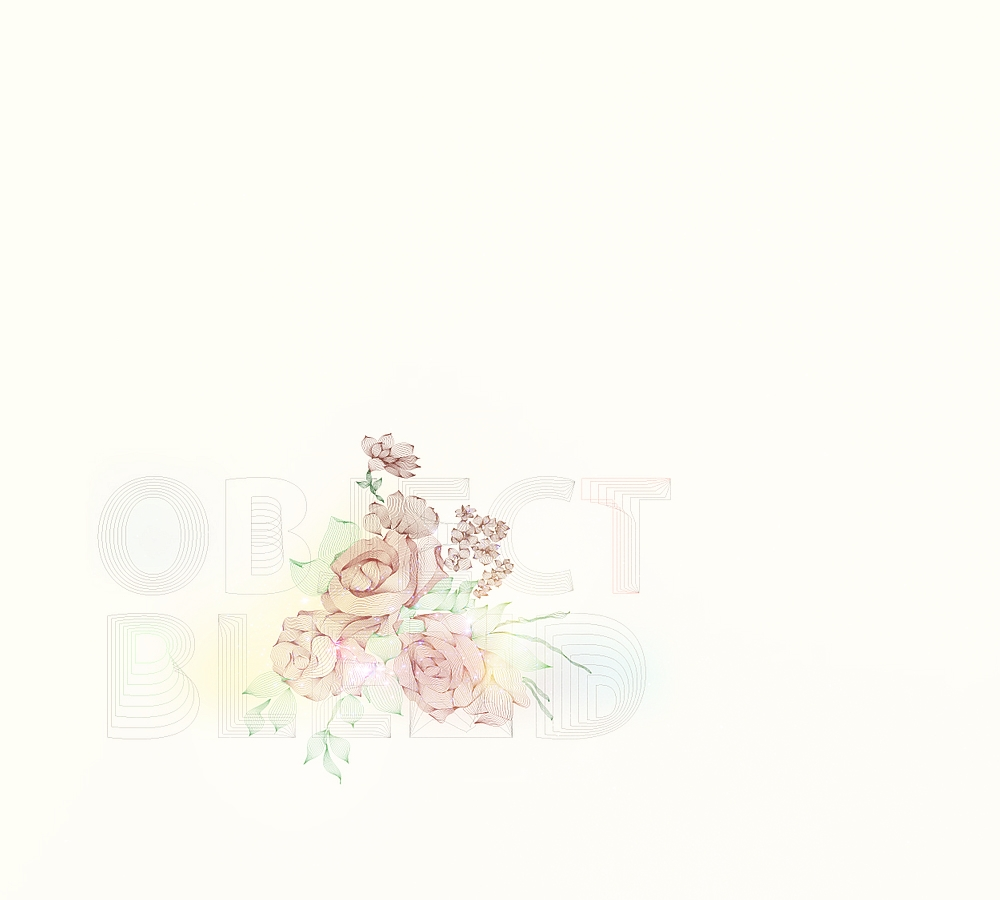

 2005 год, мне семь лет В игровой было так тихо, что было слышно, как хомячок Лимонад жует капусту. И как бьются о стекло падающие за окном листья. И как ударяется о зубы и звенит карамелька у меня за щекой. Я замерла посреди комнаты, внезапно заметив предмет, которого здесь не было вчера. Коробка. Большая, картонная, перевязанная желтым бантом, какие появляются в доме только на Рождество. И на мой день рождения. И когда приезжает бабушка. И в них всегда есть подарки! Я подбежала к коробке и заглянула в нее… Сколько себя помню, всегда любила животных. У меня жил хомячок. И два зайчика в клетке во дворе. Рыбка-петушок ярко-синего цвета в круглом аквариуме, который стоял в спальне. И гигантская улитка, которую назвали Лолли-Леденец и поселили на кухне в большом прозрачном контейнере. Но маленького медведя у меня еще не было! Пушистый, толстолапый, с бурой шерсткой, белой грудкой и маленькими ушками – ведь это же он! Сидел в коробке, обнюхивал картонные стенки и смотрел на меня большими карими глазами. Мне запрещено покидать игровую комнату, но волна восторга внутри поднималась все выше и выше, пока не затопила окончательно. Ноги сами распрямились в коленках и понесли к двери, руки схватились за ручку и распахнули дверь, рот раскрылся и закричал: – Мама! Папа!
Моя любимая няня уволилась. Родители уговаривали ее остаться, но потрясение было слишком велико. Кажется, это пятая няня, которая не выдержала бремени сложного ухода за столь необычным ребенком. Вместо нее пришла какая-то другая дама, полная, круглая и розовощекая. Она была похожа на большую надувную игрушку – казалось, если ткнуть ее иголкой, то она сдуется и улетит. Мама без конца инструктировала новую тетю насчет того, как ухаживать за мной. Как будто я была волшебным зверем, за которым нужен особый магический уход. – Мелисса, мы очень надеемся, что вы справитесь. Следующая ошибка может стоить слишком дорого. Это вопрос жизни и смерти. Прикосновение к другим людям – хуже, чем позволить ребенку прикоснуться к раскаленной каминной решетке. – Миссис Макбрайд, я подойду к делу со всей ответственностью, – сказала дама, перелистывая страницы большой папки, которую разложила перед ней мама. – В прошлый раз Долорес просто убежала из игровой и направилась в нашу спальню, а я не заперла дверь. Не предполагала, что она может вот так взять и ворваться. Раньше такого никогда не случалось. Я была неодета, а Долорес обнаружила утром подарок от бабушки и была так возбуждена, что забыла о правилах.
Я была лишена всего того, что даровано обычным детям: школа, общение со сверстниками, экскурсии, путешествия, игры, объятия, ладошка в ладошке, одно печенье на двоих. Дети имеют привычку прикасаться друг к другу, обниматься, драться, меняться одеждой и делить еду. Все это могло стоить мне жизни. Поэтому образование я получала дома, под присмотром родителей. С репетиторами, облаченными в свежие халаты и перчатки. И общалась только с родителями, Сейджем, няней и взрослыми людьми, которым не придет в голову предложить мне доесть свой сэндвич или поменяться одеждой. Меня окружали идеально чистые вещи. Все, к чему я прикасалась, не должно было контактировать с потом и жиром других людей. Я постоянно носила перчатки и закрытую одежду. А о технологии приготовления еды для меня можно было бы написать целый трактат. Посуда должна была быть идеально чистой, повар работал в маске, и ела я всегда одна. Чтобы случайно не перепутать и не взять со стола то, что мне не предназначалось. Иногда еду мне готовил Сейдж, и потом мы ели ее вместе за одним столом – о, трапезы с ним были моими самыми любимыми! Только благодаря брату моя жизнь не превратилась в жизнь Рапунцель. Мы общались, смотрели кино, вместе играли с Хэйзел, принадлежали друг другу.
А какая жуткая ревность переполняла меня, когда к нам в гости приходили его друзья-мальчишки. Или хуже того – девчонки. Я не испытывала никакого интереса к другим детям, а если во мне и просыпались крохи любопытства, то их тут же сметал на своем пути ураган зависти и злости. Они претендовали на моего Сейджа! Они трогали его, хлопали по плечу, толкали в бок, обменивались игрушками, ели картошку с одной тарелки! «Лори, иди к нам! – не раз предлагал мне Сейдж. – Тебя никто не будет трогать, я предупредил их, что нельзя». Но присоединиться к ним означало примириться с их посягательствами на то, что было моим. А мириться я не собиралась. Я хмурилась, громко стучала пятками по лестницам, запиралась в комнате и ломала игрушки: выдергивала волосы у Барби и рушила построенные из «Лего» замки. Родители думали, что мое деструктивное поведение – результат недостатка общения со сверстниками. Соблюдая все меры предосторожности, они начали приводить в дом детей близких друзей. Но я не хотела играть ни с кем, кроме Сейджа. – Потерпи, Лори… Но мама словно не услышала, она вывернулась из моих объятий и резко поставила меня на пол – белая от ужаса.
Я вбежала в спальню родителей и бросилась к кровати. Мне хотелось обнять маму и отца так сильно, как только смогли бы руки. Хотелось выплеснуть на них весь восторг и благодарность. Ведь это они подарили мне мишутку! Это они нашли его в лесу и принесли домой! Я улыбалась, я смеялась звонко, как колокольчик, но на лице только-только проснувшейся мамы не было ответного веселья. – Долорес, стой! Нельзя! – закричала она, вытянув вперед руки. Спящий рядом с ней отец резко сел на кровати, но и он проснулся слишком поздно, чтобы остановить меня. На целое мгновение позже. Я и раньше слышала подобные окрики: «Стой! Остановись! Не трогай!» – и всегда замирала на месте, потому что меня так приучили. Это стало почти рефлексом. Но только не в этот раз. Мое счастье было слишком велико, и оно наполнило меня такой быстротой и силой! Я взлетела на кровать, обхватила маму за шею – крепко-крепко – и прижалась губами к ее щеке. Мама не хотела целоваться, она отпрянула, я потеряла равновесие, и мы обе рухнули на кровать, в простыни, пропахшие лавандой. Матрас прогнулся под нами, а потом подбросил в воздух. – Там мишутка! В коробке! Внизу! – закричала я. – Настоящий! Но мама словно не услышала, она вывернулась из моих объятий и резко поставила меня на пол – белая от ужаса.– Эми, вызывай скорую, – скомандовал мой отец, накрывая меня одеялом и поднимая в воздух. Я брыкалась и радостно визжала, все происходящее казалось мне какой-то новой веселой игрой.
Отец так резко распахнул дверь в ванную, что я испугалась. Кафель был такой холодный! Пахло мылом и влагой. – Я не хочу мыться! – возмутилась я. – Я хочу играть с медвежонком! – Ох, Долорес, – застонал отец, разворачивая одеяло. Ему помогла подоспевшая няня. Ее руки тряслись, когда она расстегнула мою пижаму. Вода не успела нагреться, но взрослые не желали ждать. В меня ударил сноп ледяных струй, и я завизжала от ужаса. В ванную влетела мама: волосы растрепаны, лицо серое, бескровное, в руках чемоданчик с лекарствами. Она посмотрела на мое перекошенное от испуга лицо и сама начала плакать. – Мне холодно! – плакала я. – Потерпи, Лори, сейчас вода станет теплее…Меня тщательно намылили и вымыли, потом начали поливать руки и лицо какими-то спреями, которые отвратительно пахли. Глаза начали слезиться от обиды и резкого химического запаха, но… что-то в моем теле стало тревожить гораздо сильнее, чем ледяная вода и запах лекарств. Руки – они начали гореть. Щека – ей словно влепили пощечину. Губы – онемели и начали кровоточить: я почувствовала привкус крови во рту.